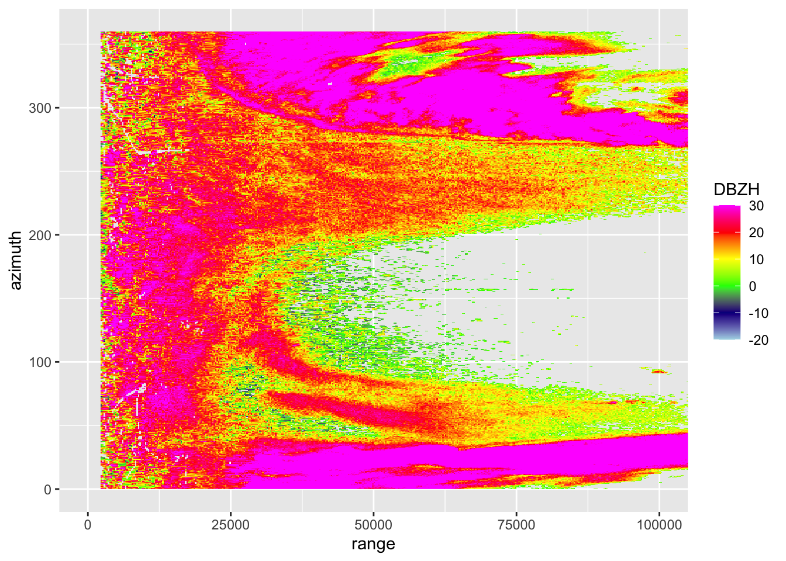
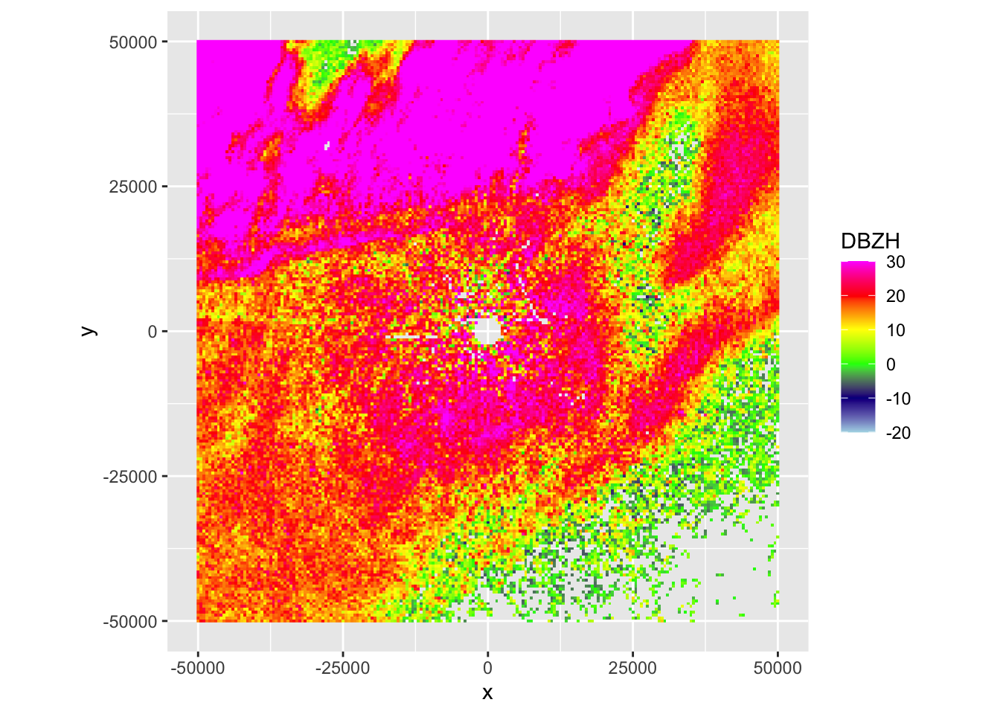
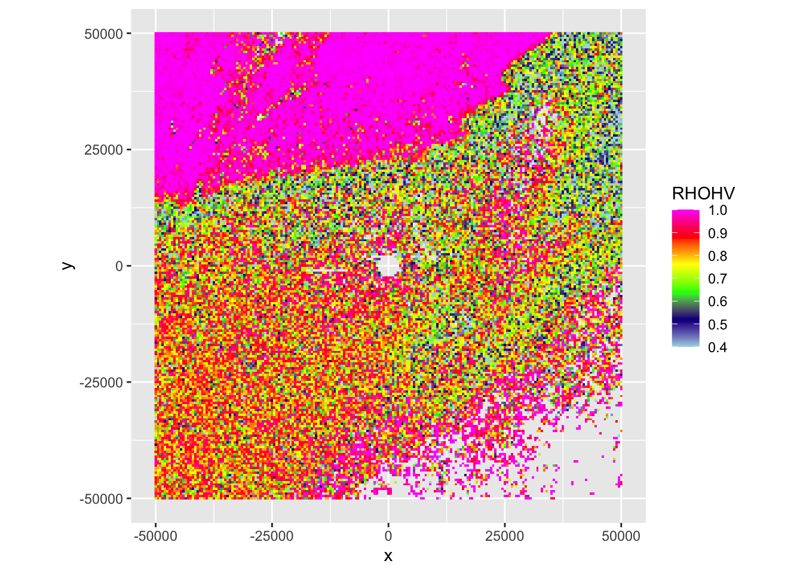
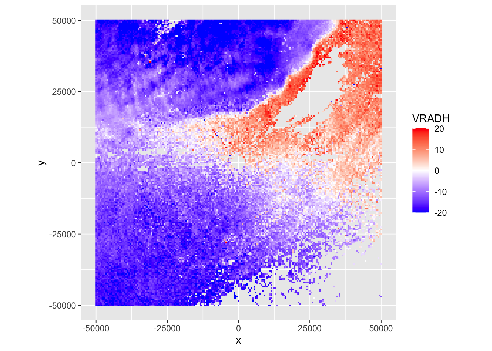
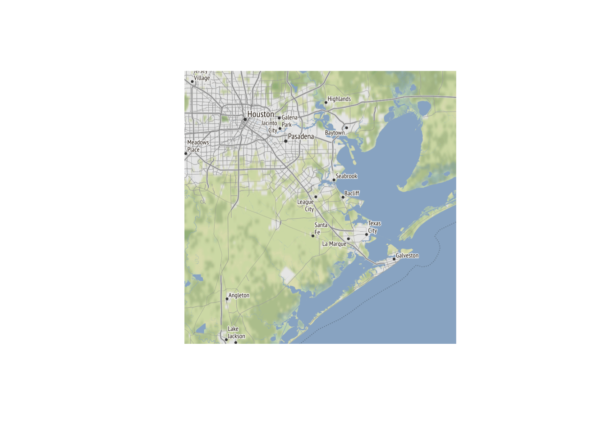
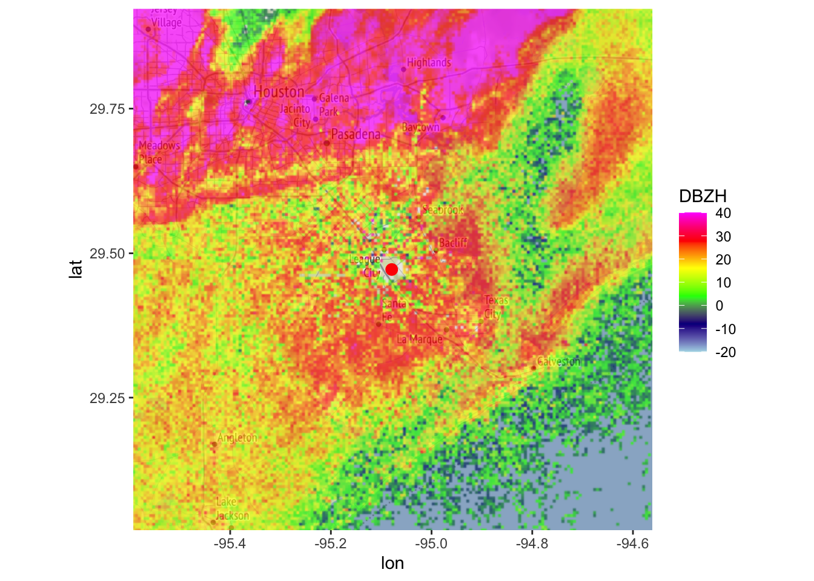

2 Basic visualization of radar scans
2.1 The structure of polar volumes
# Let's first download the NEXRAD polar volume files for the KHGX radar (Houston)
# for a 15 minute period in 2017:
download_pvolfiles(date_min=as.POSIXct("2017-05-04 01:25:00"), date_max=as.POSIXct("2017-05-04 01:40:00"), radar="KHGX", directory="./data_pvol")## Downloading data from noaa-nexrad-level2 for radar KHGX spanning over 1 days##
## Downloading pvol for 2017/05/04/KHGX/# store the filenames in my_pvolfiles
my_pvolfiles <- list.files("./data_pvol", recursive = TRUE, full.names = TRUE, pattern="KHGX")
# print to console our files:
my_pvolfiles
# let's load the first of our downloaded files:
my_pvol <- read_pvolfile(my_pvolfiles[1])# The default summary information of a `pvol` object contains information
# on the scans (sweeps) and their moments:
my_pvol## Polar volume (class pvol)
##
## # scans: 14
## radar: KHGX
## source: RAD:KHGX,PLC:HOUSTON,state:TX,radar_name:KHGX
## nominal time: 2017-05-04 01:28:44# We can also extract the elevation angles from the polar volume as follows:
get_elevation_angles(my_pvol)## [1] 0.483395 0.878910 1.318360 1.801755 2.416995 3.120115 3.999025
## [8] 5.097660 6.416020 7.998050 10.019530 12.480470 15.600585 19.511719Exercise 1: What is the minimum and maximum scan elevation contained in the volume? And which scan parameters are available? (See manual page of the read_pvolfile() function for the nomenclature of various available quantities).
2.2 Plotting radar scans
# let's extract the scan collected at 1.5 degree elevation from our polar volume:
my_scan <- get_scan(my_pvol, 0.5)
# print some information about this scan:
my_scan## Polar scan (class scan)
##
## parameters: DBZH RHOHV PHIDP ZDR VRADH
## elevation angle: 0.483395 deg
## dims: 1201 bins x 720 rays# let's plot the reflectivity factor parameter of the scan in a range - azimuth coordinate system:
plot(my_scan, param = "DBZH")
Usually it is easier to visually explore radar scans as a PPI (plan position indicator), which is a projection of the scan on a Cartesian (X,Y) or (lat,lon) grid:
# before we can plot the scan, we need to project it on a Cartesian grid,
# i.e. we need to make a Plan Position Indicator (PPI)
my_ppi <- project_as_ppi(my_scan)
# print some information about this ppi:
my_ppi## Plan position indicator (class ppi)
##
## parameters: DBZH RHOHV PHIDP ZDR VRADH
## dims: 201 x 201 pixels# you can see we projected it on a 500 meter grid
# (check the manual of the project_as_ppi function to see how you can
# change the grid size (argument grid_size) and the maximum distance
# from the radar up to where to plot data (argument range_max))
#
# Now we are ready to plot the ppi, for example let's plot reflectivity factor DBZH:
plot(my_ppi, param = "DBZH")
Exercise 2: This case shows an incoming precipitation front, characterized by localized but intense thunderstorms, as well as biological scattering. Make also a ppi plot of the correlation coefficient (RHOHV) and radial velocity (VRADH). Verify which regions are precipitation, and the approximate direction of movement of biology and precipitation.
# Plot the correlation coefficient (RHOHV):
plot(my_ppi, param = "RHOHV")
# Plot the radial velocity (VRADH):
plot(my_ppi, param = "VRADH")
# Answer:
# * Precipitation areas are characterized by high correlation coefficients (typically > 0.95),
# i.e. the top left corner of the image is precipitation
# * The blue radial velocity of the precipitation indicates it is moving towards the radar.
# * The radial velocity field of the biology shows areas south-west of the radar moving
# towards the radar (blue), and areas north-east of the radar moving away from it (red).
# The biology is therefore moving towards the north-eastExercise 3: Based on the radial velocity image, are the biological scatterers birds or insects? Why?
# Answer:
# * Precipitation moves with the wind field. Since the biology moves into a different direction
# than the wind and a very different speed, we can be sure these are birds.
# The biological scatterers have a high self-propelled speed, which is
# typical for birds, not for insects.
# * Note: This is an S-band radar. In C-band radars you will typically see that the texture
# (spatial variability) of the radial velocity is considerably smoother in areas with
# precipitation than in areas with biology.2.3 Overlaying radar scans on maps
# It is often informative to plot radar data on a base layer.
# first download the background image:
basemap <- download_basemap(my_ppi)## Downloading zoom = 10 ...## Map tiles by Stamen Design, under CC BY 3.0. Data by OpenStreetMap, under ODbL.# plot the basemap:
plot(basemap)
# then overlay the PPI on the basemap, restricting the color scale from -20 to 40 dBZ:
map(my_ppi, map = basemap, param = "DBZH", zlim = c(-20, 40))